Java technology, framework and library showcase
Java software developed and/or used by SO!GIS.
ilivalidator web service
A minimalist INTERLIS check service.
GRETL
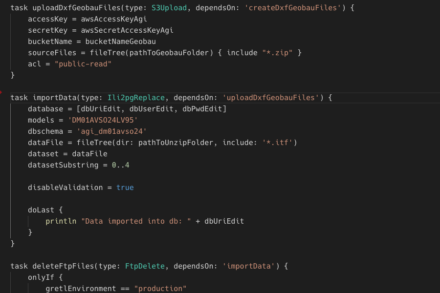
A Gradle plugin that extends Gradle for use as a sql-centric (geo)data ETL. GRETL = Gradle ETL.
ÖREB web client
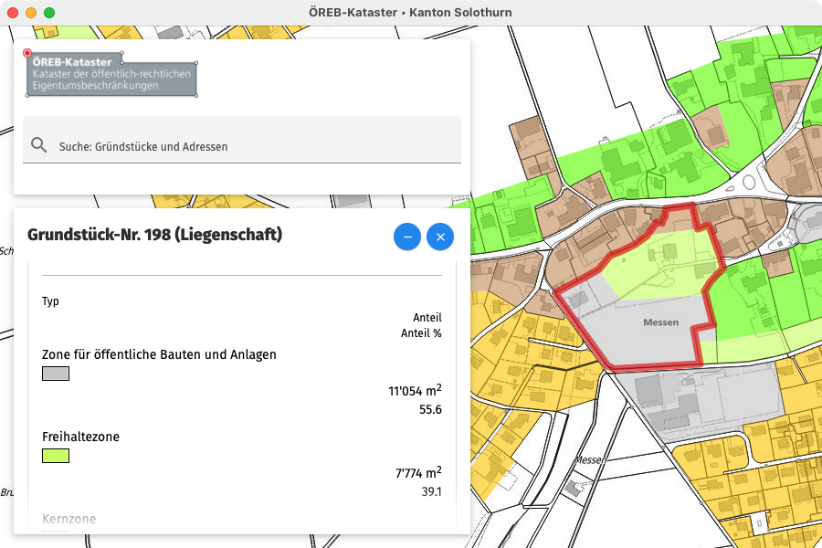
A standalone ÖREB web client (for testing purposes).
ili2pg with Python
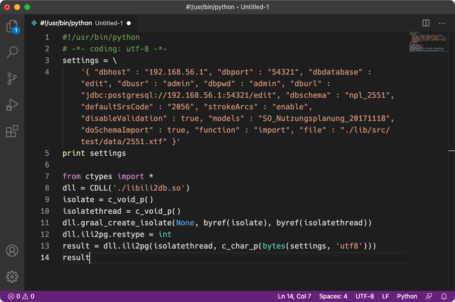
Ili2pg usage with Python.
Standortkarte
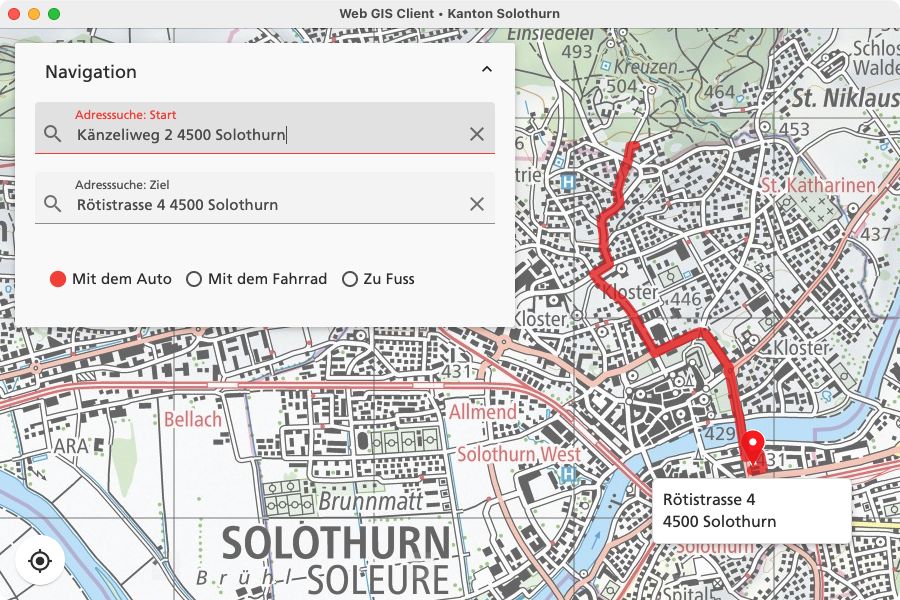
Web map that shows the location of the cantonal offices (incl. simple routing service).
ÖREB web services
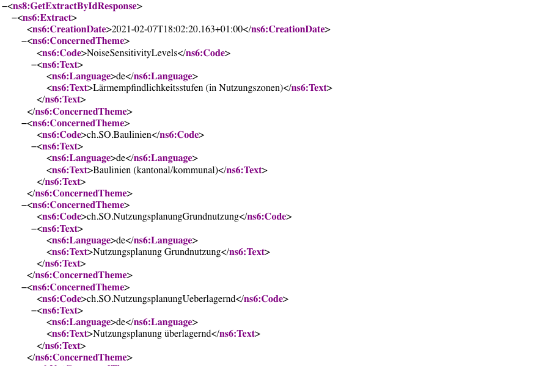
Best in class ÖREB web service.
ili2gpkg web service
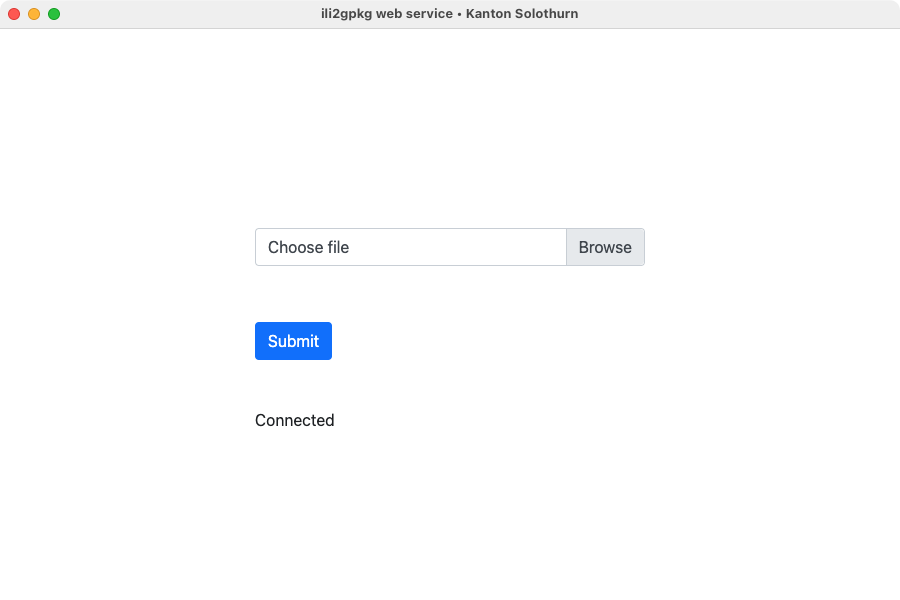
A minimalist INTERLIS to GeoPackage converter.
embedded web gis client
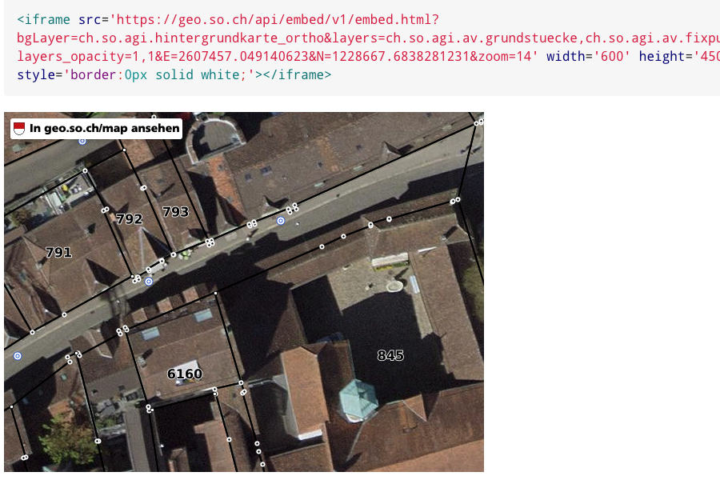
Web GIS client for web integration with iFrames.
avgbs2mtab
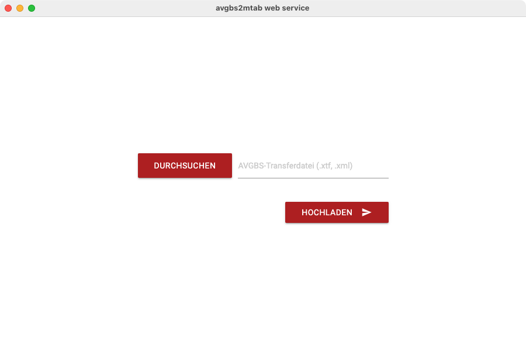
Converts parcel area and ownership mutation data (AVGBS) to visual crosstables (Excel).
ownership mutation data integration
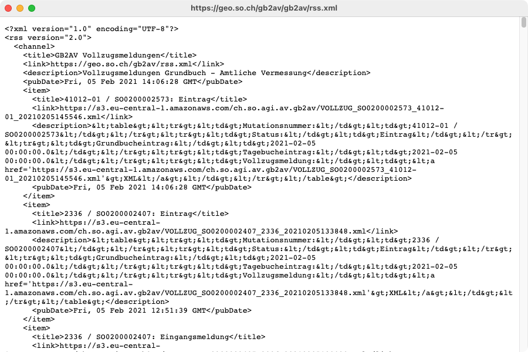
Importing ownership mutation data for controlling purposes.
data provisioning
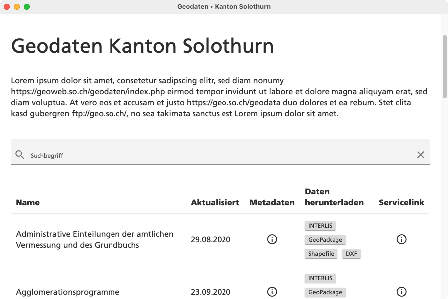
POC of the new data provisioning.
ilivalidator-custom-functions
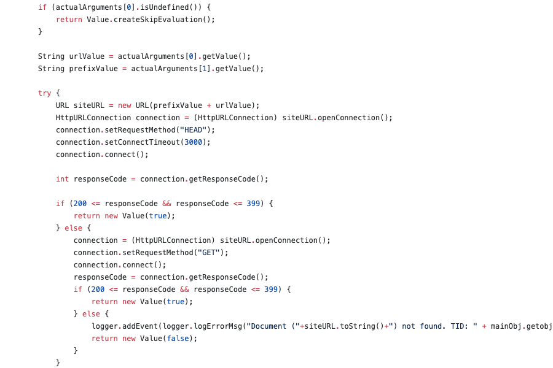
Enhance the validation power of ilivalidator with some custom functions.
contours generation
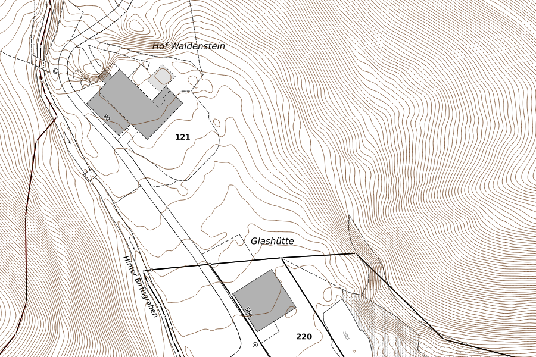
Generate contours from digital elevation models.
INTERLIS repository generator
Nadelstich
Nadelstich
simi
index updater
h2(gis) custom functions